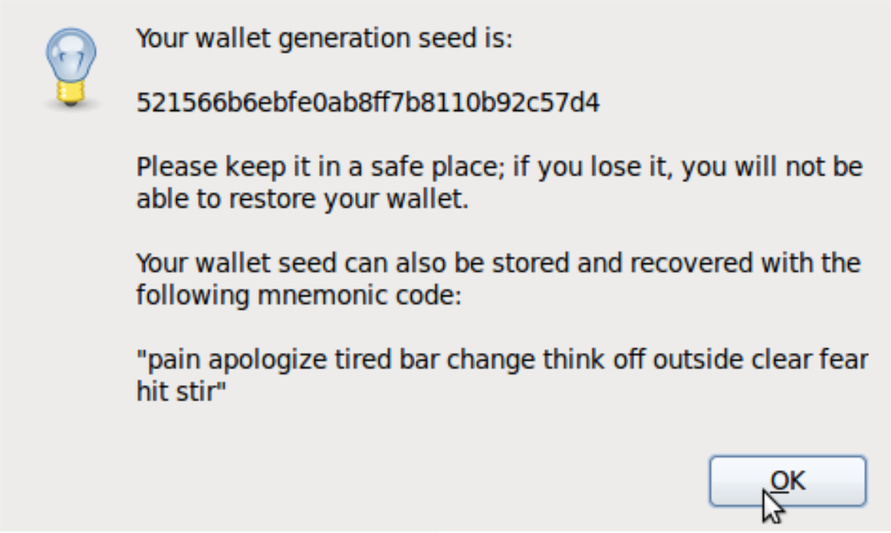
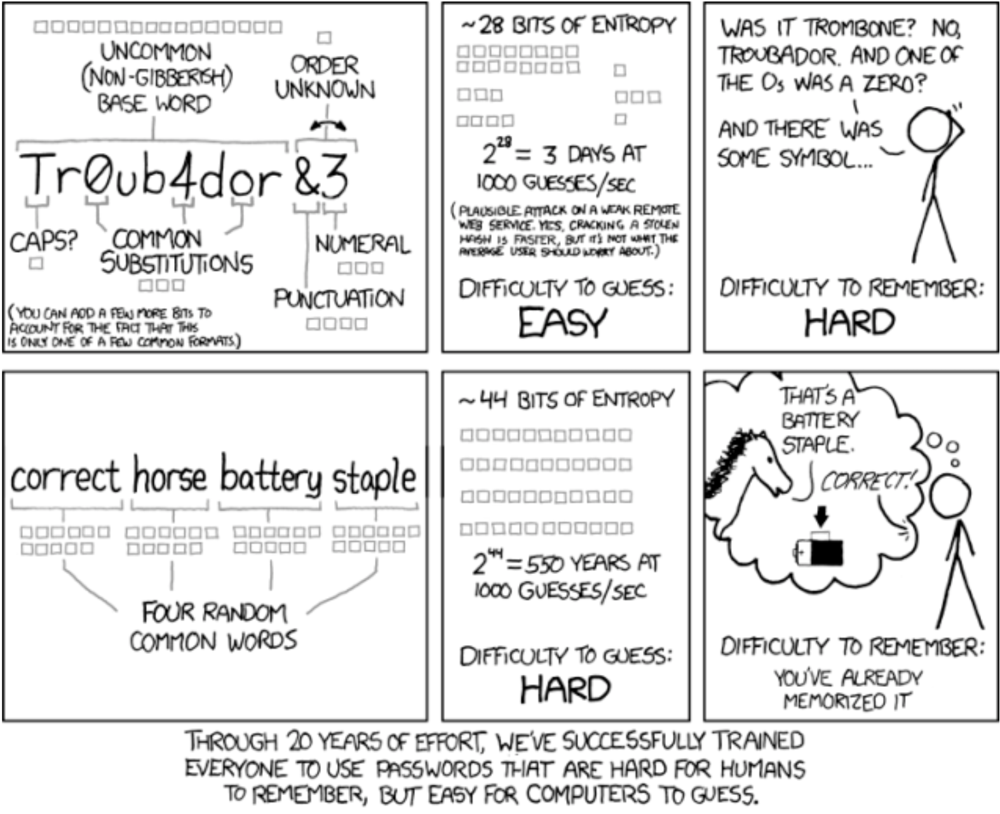

-
Bruce Schneier’s Method
Take a sentence and turn it into a password.
- WOO!TPwontSB = Woohoo! The Packers won the Super Bowl!
- PPupmoarT@O@tgs = Please pick up more Toasty O's at the grocery store.
- 1tubuupshhh…imj = I tuck button-up shirts into my jeans.
- W?ow?imp::ohth3r = Where oh where is my pear? Oh, there.
-
The Electrum Method
How can you create a 12-word seed of your own? It's as simple as it sounds. Come up with 12 random words.
Instead of a difficult-to-remember string of characters, you can make a lengthy phrase instead.- 
- 
-
The PAO Method
The PAO Method is creating stories to generate passwords. Person-Action-Object (PAO) method to create and store your unbreakable passwords
Select an image of an interesting place (Mount Rushmore). Select a photo of a familiar or famous person (Beyonce).
Imagine some random action along with a random object (Beyonce driving a Jello mold at Mount Rushmore).
Our brains remember better with visual, shared cues and with outlandish, unusual scenarios. -
Phonetic Muscle Memory
- Go to a random password generator site.
- Create 20 new passwords that are at least 10 characters in length and include numbers and capital letters (and punctuation if you're feeling brave).
- Scan the passwords, looking for phonetic structure—basically try to find passwords that you can sound out in your head.
For example: drEnaba5Et (doctor enaba 5 E.T.) or BragUtheV5 (brag you the V5). - Type out the phonetic passwords in a text file, taking note of how easy they are to type and how quickly you can type them.
The easy-to-type passwords tend to get stuck in my muscle memory quicker. - Keep the phonetic, muscle-memory passwords. Toss the rest. Print out your text file with password keepers.
4 Methods
-
Sign Up for a Password Management Tool
-
Keep Original Passwords for Your Most Important Tools, Apps, and Websites
Use original ones for important sites like email, Facebook, Twitter, and banks.
Use a common (but hard to crack) password for all the less important spots. -
Hybrid Method: Password Management Plus Memorization
Memorize passwords for your most important and most frequently used tools and use LastPass or 1Password for the rest.
You could even split it in such a way that you memorize passwords you use most often in places where LastPass and 1Password
are least accessible—mobile apps you log in to all the time, for instance.